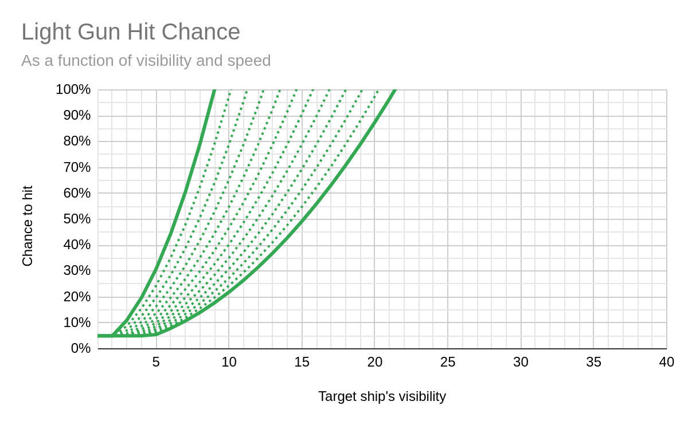
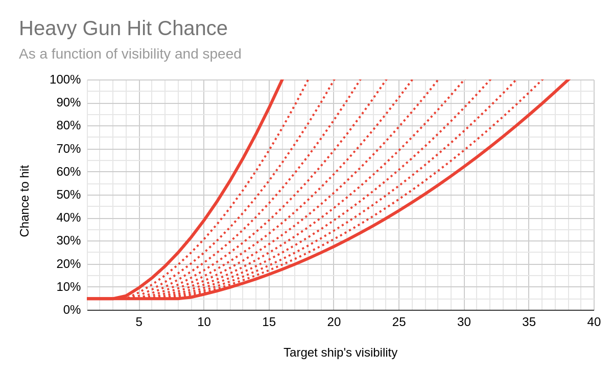
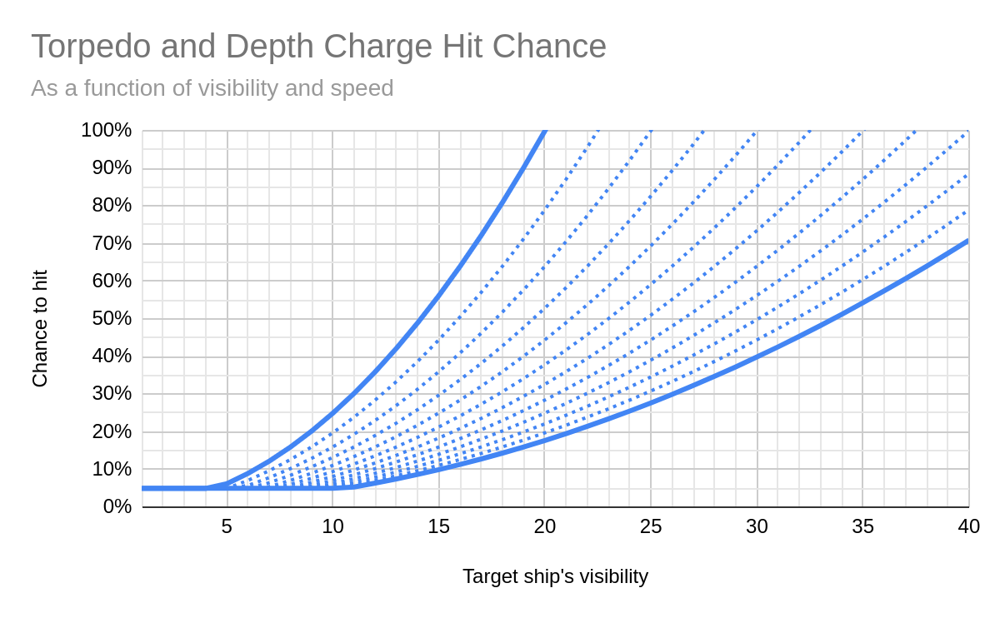
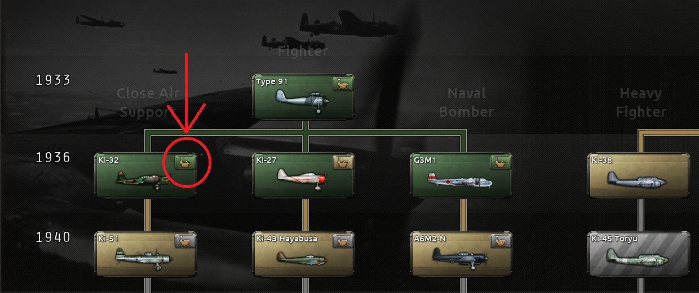
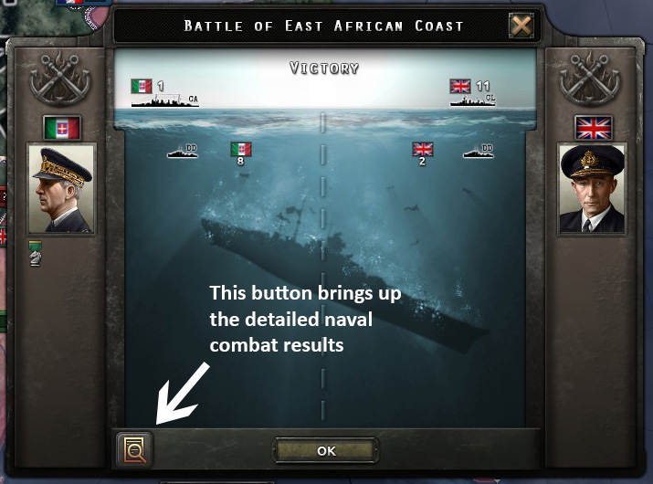
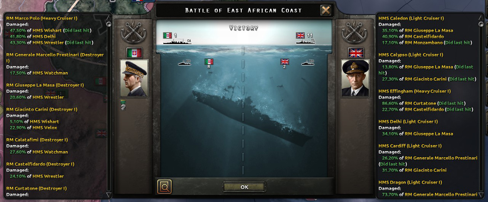

海战
原页面：Naval battle
一场 海战 会在两支特遣舰队之间针对某个特定省份发起，其中一方是攻击方。这通常发生在 spotting 过程完成之后，或者敌对舰队移动到同一省份时。航空队的海上打击和港口打击会触发一场立即结算的海战。否则，战斗会持续到一方完全逃脱或被摧毁为止。防守方总是以满效率加入战斗，而攻击方的效率可能会根据情况降低。
在战斗中，舰船可以独立行动，而通常被抽象化的运输船队也会作为个别舰船出现。
Layout
- 屏卫编组：由 护卫舰 组成，它们屏卫战列线和航母群免受鱼雷攻击。
- Battle-line：由 主力舰 组成，航母除外。除了提供强大火力外，这些舰船还屏卫航母群免受鱼雷攻击。
- 航母群：由能够进行远程打击的航母组成。如果有任何运输船队在场，它们也会出现在此区域。
- 潜艇狼群：由 潜艇 组成，如果它们没有获得足够的鱼雷屏卫，可能会威胁敌方战列线和航母群。
参考 HOI4 开发日志 - 新海战 "Battle-lines" 论坛：1133625
屏护效率
屏卫舰与 主力舰 及运输船队的比例就是 screening ratio。在定位良好的情况下，当每艘主力舰和/或航空母舰配备 3[1] 艘屏卫舰，且每支运输船队额外配备 0.5[2] 艘屏卫舰时，即可达到 100% 屏卫效率。例如，如果你有 4 艘航母和 4 艘战列舰，就需要 24 艘屏卫舰才能达到 100% 屏卫效率；或者如果你有 16 支运输船队正遭受潜艇攻击，则需要 8 艘屏卫舰才能达到 100% 屏卫效率。高屏卫效率可阻止敌方对战列线和航母群的鱼雷攻击，并给予这些编组以下加成：
- 命中率：在 100% 屏卫效率时最多 +40%
- 撤退速度：在 100% 屏卫效率时最多 +20%
主力舰与航母及运输船队的比例就是 carrier screening ratio。在定位良好的情况下，当每艘航母配备 1[3] 艘主力舰，且每支运输船队额外配备 0.25[4] 艘主力舰时，即可达到 100% 航母屏卫效率。高航母屏卫效率还能进一步阻止敌方对航母群的鱼雷攻击（效果递减叠加）。它还会给予航母和运输船队以下加成：
- 出击效率：在 100% 航母屏卫效率时最多 +10%
- 撤退速度：在 100% 航母屏卫效率时最多 +20%
糟糕的定位会惩罚舰船对屏卫效率和航母屏卫效率的贡献。该惩罚随定位降至 0% 而线性增加到 -50%[5]。这可能使达到 100% 效率所需的屏卫比例最多提高 2x。
武器冷却
重型攻击火炮和轻型攻击火炮分别每 1[6] 小时和每 1[7] 小时可以开火一次。鱼雷通常每 4[8] 小时开火一次。这可以由 -25% 通过  「装填训练大师」 特质来降低。
「装填训练大师」 特质来降低。
目标选择
每艘拥有攻击性武器（即不是航母和运输船队）且武器处于冷却中的舰船，每个战斗小时可以各自独立地以三艘敌方舰船为目标：一艘用深水炸弹/轻型武器，一艘用鱼雷，一艘用重型火炮。根据武器类型和敌方屏卫情况，只能以某些敌方编组为目标。
- 深水炸弹： 是唯一能以潜艇为目标的武器类型，且仅当潜艇已被发现时（见下文）
- 轻型火炮： 只能以最近的非空编组为目标，不过航母和运输船队不会以敌方航母或运输船队为目标
- 重型火炮： 可以以前两个非空编组为目标
- 鱼雷： 鱼雷以主力舰为目标（绕过屏卫编组）的概率为 100% 减去敌方 屏护效率。要以航母群中的舰船（包括运输船队）为目标，还需要额外通过一次 100% 减去敌方 carrier screening efficiency 的检定。
潜艇只有在交战规则设为高风险时才会以屏卫舰为目标。只有在设为中风险或更高时才会以主力舰为目标。
在剩余的有效目标中，通过加权随机选择挑出一个。如果开火舰船当前没有逃跑，敌方目标的权重如下（括号内为轻型火炮的数值）：[a]
- 主力舰：30 (2)
- 护卫舰：3 (6)
- 潜艇：4
- 航母：15 (1)
- 潜艇 vs 运输船队：600 (40)
- 非潜艇 vs 运输船队：60 (4)
如果目标兵力不满，权重最多获得 +100% 加成。如果目标正在逃跑，权重降低 50%。如果目标正在积极作战（即不在等待），则获得 +50% 加成。
当开火舰船正在逃跑时，加权方式类似，但只考虑正在积极作战的目标，并且总是选择得分最高的目标，不进行随机化。
潜艇
潜艇在隐藏时完全免疫被瞄准。这由潜艇上方一个带叉的眼睛符号表示。发现一艘潜艇会开始 20[9] 小时的冷却，之后潜艇会再次隐藏（除非冷却被刷新）。
有三种情况会暴露潜艇：
- 如果潜艇在战斗开始时处于防守方，它最初会被发现 16[10] 小时。这通常发生在其特遣舰队被敌方巡逻队 spotted 时。由于潜艇一旦进入战斗后被发现几率极低，这是反潜舰船（尤其是使用海军轰炸机的反潜航母）能够有效对付潜艇的主要方式。重要的是，escorting convoys 的舰船永远无法以这种方式发现潜艇，这反直觉地使得反潜舰船在护航运输船队时难以击杀执行袭击任务的潜艇。
- 如果敌方特遣舰队中有任何舰船的水下探测大于零，那么潜艇每次攻击时都有 3.5%[11] 的几率暴露自己。潜艇的可见度会影响该几率，而糟糕的定位最多会使可见度效果增加 200%。[12] 可以通过鱼雷暴露几率修正来降低它，例如来自
 「电动鱼雷」 科技、
「电动鱼雷」 科技、 「沉默猎手」 海军将领特质，以及像
「沉默猎手」 海军将领特质，以及像  「运输船队拦截」 或
「运输船队拦截」 或  潜艇作战（Submarine Operations） 这样的潜艇海军学说。合并后的公式为：[13]
潜艇作战（Submarine Operations） 这样的潜艇海军学说。合并后的公式为：[13]
- (100\%+torpedo reveal chance factor)· 3.5\%· \frac \max (sub visibility,0)100· (300\%-2· positioning)
- 这是海战中潜艇被发现的主要方式，例如面对护航运输船队时。因此，在让潜艇担任这一角色时，降低鱼雷暴露几率非常重要。
- 如果敌方有任何数量的水下探测，那么每个战斗小时，潜艇都有几率被敌方水下探测被动发现：[14]
- hourly passive reveal chance=0.001\%· \max (round((\min (detection factor,2)· 11)^3),1)
- detection factor=0\%· enemy air sub detection+\frac average enemy ship sub detection100+\frac \max (sub visibility,0)100· (300\%-2· positioning)
- 由于游戏代码中很可能存在的错误，即使使用专门的反潜舰船对付过时的潜艇，这种情况发生的几率也非常小。例如，平均水下探测为 45（这几乎是仅由专业反潜驱逐舰组成的特遣舰队理论上的最大值），面对 25 的潜艇可见度（未升级的过时早期潜艇），每小时发现隐藏潜艇的几率为 0.457%。这意味着平均需要 152 小时，约 6.333 天，才能让一艘特定的过时早期潜艇在战斗中被被动发现，并持续标准的 16 小时。同样，由于很可能是错误，空中水下探测对战斗中被动发现潜艇的几率贡献为 0%[15]，这意味着只考虑舰船的水下探测。
命中率



火炮和鱼雷的基础命中率为 10%，[16] 深水炸弹的基础命中率为 11%。[17] 如果开火舰船缺乏人力或组织度，其命中率分别最多降低 -25%[18] 和最多降低 -50%[19]。
这还会进一步受到开火武器和目标舰船双方命中轮廓的影响。命中轮廓较低的舰船更难被命中，而命中轮廓较低的武器更善于瞄准。
hitProfile_ship=\frac 100· visibility0.5· speed+20
潜艇使用其潜艇可见度，即使已被发现也是如此，而所有其他舰船使用其水面可见度。运输船队的命中轮廓始终为 85。[22]
海军武器的命中轮廓如下：
命中率随后按如下方式修正：[27]
: Hit chance = \max(base hit chance · modifiers · \min((\frachitProfile_ship hitProfile_weapon )^2, 1.0 ), 2\% )
这意味着，当舰船的命中轮廓小于武器自身的命中轮廓时，武器对其命中率会受到惩罚。命中率可以被恶劣天气、夜间、屏护效率、火控和/或雷达 模块、军工组织 特质和政策（配合 反抗暴政）、 军官团 精神（配合 一步不退），以及舰船所属海军将领的技能等级和诸如
军官团 精神（配合 一步不退），以及舰船所属海军将领的技能等级和诸如 
 鱼雷专家 和
鱼雷专家 和  「驱逐舰领舰」 这样的特质所修正。如果一次攻击的命中率未能命中，目标不受影响。
「驱逐舰领舰」 这样的特质所修正。如果一次攻击的命中率未能命中，目标不受影响。
实际上，4% 的速度提升大致相当于将舰船对其他舰船的有效 HP 提高约 1%。无论舰船的潜艇/水面可见度如何，也无论对其使用何种武器，这一提升都普遍适用。同样，1% 的可见度降低大致相当于将舰船对其他舰船的有效 HP 提高约 1.1%。
例如，一艘 1936 年轻巡洋舰拥有 15 的水面可见度和 32.0 节的速度，其舰船命中轮廓约为 41.7。当被另一艘 1936 年轻巡洋舰用其轻巡洋舰炮组射击时，若除基础火控系统外没有其他命中率修正，基础命中率将为 102.5%，武器命中轮廓为 45，使该次攻击的最终命中率约为 87.9%。如果该轻巡洋舰拥有 -5% 的水面可见度加成（例如来自  「夜战」 军官团 精神），使水面可见度变为 14.25，其舰船命中轮廓将为 39.6，于是敌方轻巡洋舰该次攻击的命中率将变为约 79.3%。
「夜战」 军官团 精神），使水面可见度变为 14.25，其舰船命中轮廓将为 39.6，于是敌方轻巡洋舰该次攻击的命中率将变为约 79.3%。
飞机在进行海军轰炸时使用完全不同的算法来计算命中率，忽略目标的可见度和速度。更多信息请参见 naval strike 章节。
装甲与穿透
装甲和穿透可以同时影响重型攻击火炮和轻型攻击火炮的 伤害 和 critical hit 几率。
| 穿甲：Armor Ratio[28] | 攻击 Damage 倍率[29] | 攻击 「暴击」 几率倍率[30] |
|---|---|---|
| ≥ 2 | 1x | 2x |
| 1 ≤ Ratio < 2 | 1x | 1x |
| 0.75 ≤ Ratio < 1 | 0.7x | 0.75x |
| 0.5 ≤ Ratio < 0.75 | 0.4x | 0.5 倍 |
| 0.1 ≤ Ratio < 0.5 | 0.3x | 0.1x |
| < 0.1 | 0.1x | 0x |
鱼雷完全无视装甲，不过一些较重的装甲模块确实会减少来自鱼雷的 伤害 以及鱼雷的 critical hit 几率。
Damage
舰船相应武器类型的伤害可以被学说、海军地形、天气、舰队之傲（若存在），以及海军将领的技能和特质修正。糟糕的定位最多可造成 50%[31] 的惩罚。敌方海军将领技能等级的防御修正也会降低伤害。
如果武器无法穿透敌方装甲，伤害最多降低 -90%。更多细节请参见 armor and piercing。
伤害会在 -2.5% 与 +47.5% 之间的修正值下随机化。[32]
伤害会同时作用于目标的 HP（按 60%[33]）和组织度（按 100%[34]）。此外，舰船一开始对组织度伤害免疫，随着舰船 HP 水平下降而逐步提升至标称值。举例来说，假设一艘舰船拥有 100/50 的 HP/组织度，并多次受到每次 50 点伤害的命中。连续的命中将分别造成 30/0、30/15、30/30 和 30/45 的 HP/组织度伤害，第四次命中将击沉该舰。
「暴击」
暴击是对目标的一次特别具有破坏性的命中，它还可能损坏目标的一些关键部位。由此产生的惩罚只能通过修理该舰来移除。
鱼雷造成暴击的几率为 10%。[35] 其他武器类型的基础几率为 5%，[36] 但也取决于装甲是否能被穿透（见 armor and piercing）以及目标的可靠性（在 100% 可靠性时降至 0%）。
 神射手 和
神射手 和  「危机魔术师」 特质都可以提高或降低暴击几率，与武器类型无关。
「危机魔术师」 特质都可以提高或降低暴击几率，与武器类型无关。
如果确实发生了暴击，它可能会影响舰船上的一个关键部位。来自其他舰船的攻击触发该效果的几率为 10%[37]，空袭为 10%[38]，两者都与可靠性成反比（例如在 25% 可靠性时，几率增加到 10%÷25%=40%）。效果取决于被损坏的具体部位（见下表）。
否则会发生普通暴击，而不损坏特定部位。伤害加成范围从 1x（100% 可靠性时）到 5 倍[39]（0% 可靠性时），线性缩放。对于鱼雷，该加成不取决于可靠性，始终为 2x。[40]
| 关键部位命中 | 目标前提条件 | 权重[暴击 1] | 暴击修正 | 对目标的状态效果 |
|---|---|---|---|---|
| 「弹药库命中」 | 0.1 | 10x 造成的组织度伤害 10x 造成的 HP 伤害 | 重型攻击：-70% 轻型攻击：-70% 鱼雷攻击：-70% | |
| 「猛烈起火」 | 1 | 2x 造成的组织度伤害 +5 造成的组织度伤害 | 组织度：-50% 恢复速度：-80% | |
| 「螺旋桨损坏」 | 0.5 | 0.5 倍 造成的组织度伤害 0.5 倍 造成的 HP 伤害 | 航速：-90% | |
| 「舵机卡死」 | 非航母 | 0.25 | 0.25x 造成的组织度伤害 0.25x 造成的 HP 伤害 | 撤退决定几率：-90% 速度：-50% |
| 压载水舱失效 | 潜艇 | 1 | 0.25x 造成的组织度伤害 0.25x 造成的 HP 伤害 | 水下可见度：+66% |
| 主炮塔被摧毁 | 拥有 重型炮组 或 重巡洋舰炮组 | 每 重型炮组 和 重巡洋舰炮组 1 艘 | 重型攻击：-50% | |
| 主炮座失效 | 屏卫舰或拥有 甲板炮 | 每 「速射火炮」、轻巡洋舰炮组 和 甲板炮 1 艘 | 轻型攻击：-50% | |
| 「鱼雷发射管失效」 | 拥有 鱼雷发射管 | 每 鱼雷发射管 1 艘 | 1.25x 造成的组织度伤害 1.25x 造成的 HP 伤害 | 鱼雷攻击：-50% |
| 「副炮被击毁」 | 拥有 副炮组 | 每 「副炮」 1 艘 | 轻型攻击：-25% |
- ↑ 权重是某个部位被击中而不是另一个部位的相对可能性。
每 8[41] 小时（04:00、12:00、20:00），飞机可以在战斗中出击。对于舰载机，则是每 6[42] 小时，不过要注意，航母在夜间默认会获得 -100% 的航母出动，除非使用类似  舰载机夜间战斗 军官团 精神的东西。
舰载机夜间战斗 军官团 精神的东西。
外部飞机数量限制为：<所有敌方舰船当前 HP 之和> * 0.05[43] * (1 + 0.2[44] * <战斗天数>)。但至少有 20[45] 架飞机总能加入。有资格加入海战的飞机数量，是分配到 对海打击 任务上的飞机总数乘以 任务效率。
阶段 0：空战与扰乱
- 主条目：空战
如果海上打击或港口打击发生的空域中有敌方战斗机存在，它们可以参与 空战，并可能在轰炸机到达其舰船目标之前就将其扰乱。更多信息请参见关于 空战 的专门条目。
未受扰乱的轰炸机航空队的海上打击目标，是从所有敌方舰船的加权分布中随机选择的。基础权重是每艘舰船的最大 HP，不包括隐藏的潜艇。该权重会根据舰船类型进行缩放：
受损舰船的权重在其接近 0% HP 时会最多提高 +500%[50]。如果一艘舰船的防空（AA）攻击低于 5，[51] 权重会增加 (5 * (5 - <AA>)) 倍。例如，运输船队只有 0.2 的防空攻击，其分值增加 5 * (5 - 0.2) = 24x。
有意让某些舰船配备低量防空火力、甚至完全没有防空火力，可能是一种可行的策略。当与更贵重、被选为海军攻击目标的权重更高的舰船（例如舰队航母）一起行动时，防空火力低或没有防空火力的较廉价舰船可以吸引对这些贵重舰船的注意力，从而提高它们的生存能力，代价是牺牲自己。
阶段 2：舰船防空防御
当一艘舰船被航空队瞄准时，只有该舰船会尝试通过先发制人地还击来自卫。对于非神风航空队，舰船成功先发制人还击的几率为：[52] : 20 \% · max(0.9 - 0.02 · average air wing plane agility, 0.01)
如果舰船的先发制人防御成功，它会摧毁其中
如果飞机执行神风攻击，舰船将始终成功进行先发制人还击，[b] 其防空攻击提高 +2,[54]，损失增加 4x。[55]
需要注意的是，只有被瞄准的那艘舰船才能用其防空火力对敌方飞机还击。这使得防空火力在预计不会被敌方飞机瞄准的舰船上价值低得多，例如由较大主力舰和/或航母组成的战斗舰队中的屏卫舰。
如果舰船向飞机射击后仍有飞机存活，它们就会执行海上打击。如果它们驻扎在参与对目标海战的航母上，其伤害会提高 10x。[56] 真正命中舰船的飞机比例为 : \frac naval targeting 10 · 30 \% [57]（上限为 0% 至 100%）。在这种情况下，舰船的速度和装甲无关紧要。
被瞄准舰船的防空攻击（除非它是运输船队）以及战斗中所有舰船的合计防空火力都会降低造成的伤害。总伤害减免量为：[58] : max(-18 \% · (targeted ship's AA + 0.25 · sum of AA of all ships fighting on same side)^ 0.225 , -75 \% ) 对于运输船队，为 : targeted ship's AA = 0 ，但运输船队防空已包含在 ：同一方所有参战舰船的防空火力之和 中。注意 ：被瞄准舰船的防空火力 也包含在 ：同一方所有参战舰船的防空火力之和 中。
暴击的计算方式与舰船的鱼雷相同。更多信息请参见 critical hit。
如果该海战是港口打击，海军基地会根据对舰船造成的伤害按比例受损。
需要注意的是，在计算防空伤害减免时，被瞄准舰船的防空火力比舰队中其他舰船的权重高 5x，而且由于公式中的指数，伤害减免效果随防空火力增加而增长得非常缓慢。这使得防空火力在预计不会被敌方飞机瞄准的舰船上价值低得多，例如由较大主力舰和/或航母组成的战斗舰队中的屏卫舰。
航母专属机制
初始阶段
海战开始时，屏卫舰只能在 8[59] 小时后攻击，主力舰只能在 6[60] 小时后攻击，但航母可以从第 0 小时起攻击。[61] 这与被称为「初始阶段」的 6[62] 小时相吻合，该称呼来自像  「突袭」 军官团 精神这样的修正。它也与舰载机每 6[42] 小时可出击一次相符（已过时，目前为 8 小时，从接近正午时开始），不过在没有类似
「突袭」 军官团 精神这样的修正。它也与舰载机每 6[42] 小时可出击一次相符（已过时，目前为 8 小时，从接近正午时开始），不过在没有类似  舰载机夜间战斗 军官团 精神的情况下，它们无法在夜间出击。
舰载机夜间战斗 军官团 精神的情况下，它们无法在夜间出击。
对于航母力量远超敌舰队的舰队而言，这些开局时仅由航母参与的战斗阶段能产生毁灭性的先手打击，进而引发滚雪球效应：敌方舰队因组织度下降而输出更少伤害，这又使其组织度比友方舰队下降得更快，从而进一步降低其伤害。然而，如果战斗在夜间或  Storm 中开始，这一初始阶段可能会被浪费，因为在此阶段航母出动会大幅减少甚至完全无法出动。
Storm 中开始，这一初始阶段可能会被浪费，因为在此阶段航母出动会大幅减少甚至完全无法出动。
航母轻攻击限制
需要注意的是，虽然航母可以通过装备 secondary batteries 获得轻攻击，但航母不会用其轻攻击射击敌方航母群/战线中的舰船。这包括敌方航母，也包括敌方运输船队。除此之外，这使得「战列航母」设计（堆满轻攻击、牺牲甲板容量的重装甲航母设计）比人们预期的还要低效，在 破交作战 时尤其如此。
航母老练度
与其他舰船一样，航母可以获得（或失去）经验，从而提升或降低老练度等级，带来各种加成和惩罚。然而与其他舰船不同，航母的伤害不会从老练度等级中获得任何好处，而是获得出击效率方面的惩罚和加成。
相反，影响航母伤害的是驻扎在航母上的舰载航空队的 经验 等级和老练度。尤其是新部署的航空队老练度从  绿色 开始，而且由于舰载航空队相对于其航空队规模损失大得多，在海战中老练度会迅速下降，因此在把驻扎在航母上的航空队投入交战前进行训练可能非常重要。王牌飞行员也可以分配到舰载航空队并影响其战斗表现。
绿色 开始，而且由于舰载航空队相对于其航空队规模损失大得多，在海战中老练度会迅速下降，因此在把驻扎在航母上的航空队投入交战前进行训练可能非常重要。王牌飞行员也可以分配到舰载航空队并影响其战斗表现。
出击效率
出击效率 决定了某艘航母上的飞机有多大比例能真正在空中任务和海战中起飞。航母的基础出击效率为 50%,[63]，而像  「航母优先」 和
「航母优先」 和  「浮动机场」 这样的学说是提升它的主要来源。
「浮动机场」 这样的学说是提升它的主要来源。 存在舰队 和
存在舰队 和  贸易封锁 学说最多可提供 +30% 的额外出击效率，而
贸易封锁 学说最多可提供 +30% 的额外出击效率，而  基地打击 学说可提供整整 +50%。政治顾问、国家精神、ship veterancy、海军将领 skill levels，以及像
基地打击 学说可提供整整 +50%。政治顾问、国家精神、ship veterancy、海军将领 skill levels，以及像  空军控制手 和
空军控制手 和  飞行甲板管理者 这样的海军将领特质，都能提供额外的出击效率，拥有满额的 carrier screening efficiency 也可以。超过 100% 的出击效率不会让已有飞机更有效，因此除非航母过度拥挤，否则它不起作用。
飞行甲板管理者 这样的海军将领特质，都能提供额外的出击效率，拥有满额的 carrier screening efficiency 也可以。超过 100% 的出击效率不会让已有飞机更有效，因此除非航母过度拥挤，否则它不起作用。
航母对飞机有最大容量，与陆基  空军基地 类似，该容量可以被超出，代价是承受 -2%[64] 的惩罚，即甲板容量每超出 1%，能够真正从航母起飞的飞机数量就会相应减少。超载惩罚可以通过
空军基地 类似，该容量可以被超出，代价是承受 -2%[64] 的惩罚，即甲板容量每超出 1%，能够真正从航母起飞的飞机数量就会相应减少。超载惩罚可以通过  集中打击 海军学说直接降低，但也可以通过拥有超过 100% 的出击效率来缓解甚至完全抵消。
集中打击 海军学说直接降低，但也可以通过拥有超过 100% 的出击效率来缓解甚至完全抵消。
例如，如果一艘航母的甲板容量可搭载 80 架飞机，却搭载了 10 个各 10 架飞机的航空队，总计 100 架飞机，那么它通常超出容量 25%，从而使能够从其起飞的飞机数量减少 -50%。在总出击效率为 100% 时，其 100 架飞机中只有 50% = 50 架飞机能够起飞。然而，如果该航母通过各种来源获得 200% 的总出击效率，它就能比正常情况多起飞 +100% 架飞机。两种效果相互抵消，使该航母 100 架飞机中的 100% = 100 架能够起飞。
航母堆叠惩罚
每方超出 （无法识别的 define "NDefines.NNavy.CARRIER_STACK_PENALTY"，用于 Module:Defines）[65] 的每艘航母，都会导致该方 （无法识别的 define "NDefines.NNavy.CARRIER_STACK_PENALTY_EFFECT"，用于 Module:Defines）[66] 的舰载航空队无法在海战中以敌方舰船为目标。该效果最高可扩大至该方 100000% 的舰载航空队无法以舰船为目标。能够以敌方舰船为目标的航空队数量始终向下取整，且与其他影响舰载航空队的惩罚不同，在计算该惩罚时每种舰载机机型都算作一个航空队。该惩罚不同于出击效率，后者会根据单艘航母上驻扎的飞机数量影响舰载机的任务效率。无法以敌方舰船为目标的飞机仍会起飞，从而可能被敌方战斗机击落。
由于舰载战斗机从不以舰船为目标，该惩罚永远不会影响舰载战斗机。
该惩罚从舰船列表底部向上施加于航母，这意味着位于列表顶部或附近的航母上的航空队比位于底部或附近的更有可能以敌方舰船为目标。任何航母上的战斗机航空队始终按该惩罚不存在的方式运作，因此当预计单场海战中会有超过 （无法识别的 define "NDefines.NNavy.CARRIER_STACK_PENALTY"，用于 Module:Defines） 艘航母时，最好把战斗机航空队放在特遣舰队中排序靠下的航母上，而把海军轰炸机航空队放在特遣舰队舰船列表中排在最上面的航母上。
总的来说，这一惩罚通常也会阻止大量部署较廉价的护航航母（只有一两个机库空间、通常由过时巡洋舰改装的航母），因为 -998 艘或更多护航航母会遭受与同样数量正规航母相同的惩罚，尽管护航航母的甲板容量远小于正规航母。
示例：
你在一场战斗中有 6 艘航母，其航空队按以下方式排列：
航母 1：8x 10 舰载轰炸机
航母 2：8x 10 舰载轰炸机
航母 3：8x 10 舰载轰炸机
航母 4：6x 10 舰载轰炸机
航母 5：5x 10 舰载轰炸机，1x 10 舰载战斗机
航母 6：1x 10 舰载轰炸机，1x 10 舰载近距空中支援，1x 10 舰载战斗机
当拥有 6 艘航空母舰时，航母堆叠惩罚会阻止 -100399500% 的舰载航空队以敌方舰船为目标，并向下取整。在计算该惩罚时，前 4 艘航母每艘只算作拥有 1 个航空队。第 5 艘航母算作拥有 2 个航空队，第 6 艘航母算作拥有 3 个航空队。这样合计为 9 个舰载航空队。-100399500% 的 9 为 9035964 个航空队，向下取整后即 9035964 个航空队可以以敌方舰船为目标。这些航空队从列表中的第一艘航母开始向下依次计算。这意味着前 5 艘航母上的海军轰炸机将正常作战，而第 6 艘航母上的海军轰炸机和近距空中支援将不会对敌方舰船发起攻击，但它们仍会起飞并容易被敌方战斗机击落。第 5 艘和第 6 艘航母上的舰载战斗机不受该惩罚影响，因此仍会起飞并可照常以敌方飞机为目标。
舰载型飞机

为了能在航空母舰上驻扎飞机，必须生产舰载型机型。在没有  唯有鲜血 及其 飞机设计器 的情况下游玩时，必须先研究飞机的陆基版本，然后单独研究其舰载版本。方法是点击空军科研标签页中飞机类型上的航空母舰按钮。只有战斗机、近距空中支援和海军轰炸机可以这样做。舰载版本的型号名称与陆基版本不同，美术图和属性也不同。如果你不打算使用航空母舰，就不需要研究舰载型飞机。
唯有鲜血 及其 飞机设计器 的情况下游玩时，必须先研究飞机的陆基版本，然后单独研究其舰载版本。方法是点击空军科研标签页中飞机类型上的航空母舰按钮。只有战斗机、近距空中支援和海军轰炸机可以这样做。舰载版本的型号名称与陆基版本不同，美术图和属性也不同。如果你不打算使用航空母舰，就不需要研究舰载型飞机。
借助  唯有鲜血 的 飞机设计器，研究任何轻型机体也会解锁其舰载版本，从而可以创建可建造的变体（战斗机、海军轰炸机或近距空中支援）。
唯有鲜血 的 飞机设计器，研究任何轻型机体也会解锁其舰载版本，从而可以创建可建造的变体（战斗机、海军轰炸机或近距空中支援）。
当一艘新航母建成时，可以像在海军栏中用船坞建造航母生产线那样，自定义默认将驻扎在其上的飞机。建成后，该航母会装满该国库存中可用的最新型号。这些航空队的补充和增援需要用  军用工厂 生产，否则可以先选中航母，然后点击地图上其位置旁边的小飞机按钮来操作，类似陆基
军用工厂 生产，否则可以先选中航母，然后点击地图上其位置旁边的小飞机按钮来操作，类似陆基  空军基地。
空军基地。
当一艘航空母舰属于一支在一个或多个地区巡逻的舰队时，驻扎在其上的航空队会显示为执行航母任务。它们将作为舰载机航空群运作，并自动参与该舰队加入的任何海战。如果打算这样使用它们，就无需给它们下达任何具体命令。
如果你想让 carriers as floating air bases 并使用航空队执行标准空中任务，那么它们将不再作为舰载机航空群自动运作；如果航母舰队被敌人交战，可能就没有空中掩护。玩家应小心确保其得到妥善保护。例如，可以在航母舰队所在地区放置一个战斗机航空队执行拦截任务，同时派出一个轰炸机航空队以相邻地区为目标，以支援两栖登陆。要让舰载航空队执行标准空中任务（包括用 pilot exercises 帮助它们为战斗进行训练），其所属航母必须位于海上（不在港口中），且不能处于任何 海军任务。

在一场海战结束后，玩家可以获取关于舰队各要素在战斗中影响的详细而有价值的信息。打开海军战斗结果界面后，按下左侧图片所示的详细海军战斗结果按钮即可查看详细信息。该按钮相当于一个开关，因此在当前会话中按下一次后，海军战斗结果将自动显示详细结果，除非再次按下详细海军战斗结果按钮。

按下后，它会在海军战斗结果摘要窗口的两侧各显示一列信息，展示每个单位或航空队（无论舰载还是陆基）对战斗的影响——参见右侧示例。在此例中，战斗并不包含空中部分，但玩家可以从下方所示的示例结果界面看到，对意大利一方而言，重巡洋舰 Marco Polo 对英国驱逐舰 Wishart 和 Wrestler 造成了最后的命中，但协助其击沉这两艘舰的还有许多其他意大利舰船，包括 Giuseppe La Masa、Giacinto Carini 和 Castelfidardo。在英国一方，重巡洋舰 Effingham 击沉了两艘敌方驱逐舰（Curtatone 和 Castelfidardo），但轻巡洋舰 Caledon 造成的伤害几乎相当（只对一艘敌舰造成了最后命中）。
如常见情况那样，在此例中详细结果里的信息比屏幕上各列能容纳的更多。要查看一场交战中其余舰船的表现（而详细结果无法一次全部显示在屏幕上），请使用详细海军结果列侧边的滚动条。
注释与参考文献
^ a: 这些数值被硬编码在游戏可执行文件中，无法修改。^ b: 这使得 Define NDefines.NAir.BASE_KAMIKAZE_TARGETING = 2 无关紧要。
- ↑
NDefines.NNavy.SCREEN_RATIO_FOR_FULL_SCREENING_FOR_CAPITALS = 3中的 定义文件。 - ↑
NDefines.NNavy.SCREEN_RATIO_FOR_FULL_SCREENING_FOR_CONVOYS = 0.5中的 定义文件。 - ↑
NDefines.NNavy.CAPITAL_RATIO_FOR_FULL_SCREENING_FOR_CARRIERS = 1中的 定义文件。 - ↑
NDefines.NNavy.CAPITAL_RATIO_FOR_FULL_SCREENING_FOR_CONVOYS = 0.25中的 定义文件。 - ↑
NDefines.NNavy.SCREENING_EFFICIENCY_PENALTY_ON_MINIMUM_POSITIONING = 0.5中的 定义文件。 - ↑
NDefines.NNavy.BASE_GUN_COOLDOWNS[1] = 1中的 定义文件。 - ↑
NDefines.NNavy.BASE_GUN_COOLDOWNS[3] = 1中的 定义文件。 - ↑
NDefines.NNavy.BASE_GUN_COOLDOWNS[2] = 4中的 定义文件。 - ↑
NDefines.NNavy.SUBMARINE_HIDE_TIMEOUT = 20中的 定义文件。 - ↑
NDefines.NNavy.SUBMARINE_REVEALED_TIMEOUT = 16中的 定义文件。 - ↑
NDefines.NNavy.SUBMARINE_BASE_TORPEDO_REVEAL_CHANCE = 0.035中的 定义文件。 - ↑
NDefines.NNavy.SUBMARINE_REVEAL_ON_MINIMUM_POSITIONING = 2中的 定义文件。 - ↑ 函数
ProcessFightingWithGun()在combatnaval.cpp中，截至版本 1.7.1。该 define 注释关于探测重要性的说法是错误的。 - ↑
NDefines.NNavy.SUBMARINE_REVEAL_BASE_CHANCE = 11、NDefines.NNavy.SUBMARINE_REVEAL_POW = 3和NDefines.NNavy.NAVAL_COMBAT_AIR_SUB_DETECTION_FACTOR = 0位于 定义文件 中，函数HourlyUpdate()位于combatnaval.cpp中，截至版本 1.7.1。这些 define 注释关于探测如何纳入其中的说法是错误的。 - ↑
NDefines.NNavy.NAVAL_COMBAT_AIR_SUB_DETECTION_FACTOR = 0中的 定义文件。 - ↑
NDefines.NNavy.COMBAT_BASE_HIT_CHANCE = 0.1中的 定义文件。 - ↑
NDefines.NNavy.DEPTH_CHARGES_HIT_CHANCE_MULT = 1.1和NDefines.NNavy.COMBAT_BASE_HIT_CHANCE = 0.1，见定义文件。 - ↑
NDefines.NNavy.COMBAT_LOW_MANPOWER_HIT_CHANCE_PENALTY = -0.25中的 定义文件。 - ↑
NDefines.NNavy.COMBAT_LOW_ORG_HIT_CHANCE_PENALTY = -0.5中的 定义文件。 - ↑
NDefines.NNavy.HIT_PROFILE_MULT = 100、NDefines.NNavy.HIT_PROFILE_SPEED_FACTOR = 0.5和NDefines.NNavy.HIT_PROFILE_SPEED_BASE = 20，见 定义文件。 - ↑ 需要验证
- ↑
NDefines.NNavy.CONVOY_HIT_PROFILE = 85中的 定义文件。 - ↑
NDefines.NNavy.GUN_HIT_PROFILES[3] = 45中的 定义文件。 - ↑
NDefines.NNavy.GUN_HIT_PROFILES[1] = 70中的 定义文件。 - ↑
NDefines.NNavy.GUN_HIT_PROFILES[2] = 100中的 定义文件。 - ↑
NDefines.NNavy.DEPTH_CHARGES_HIT_PROFILE = 100中的 定义文件。 - ↑
NDefines.NNavy.COMBAT_MIN_HIT_CHANCE = 0.02在 定义文件 中，函数CalcGunInfo()在combatnaval.cpp中，截至版本 1.7.1。 - ↑
NDefines.NNavy.NAVY_PIERCING_THRESHOLDS = { 2, 1, 0.75, 0.5, 0.1, 0 }中的 定义文件。 - ↑
NDefines.NNavy.NAVY_PIERCING_THRESHOLD_DAMAGE_VALUES = { 1, 1, 0.7, 0.4, 0.3, 0.1 }中的 定义文件。 - ↑
NDefines.NNavy.NAVY_PIERCING_THRESHOLD_CRITICAL_VALUES = { 2, 1, 0.75, 0.5, 0.1, 0 }中的 定义文件。 - ↑
NDefines.NNavy.DAMAGE_PENALTY_ON_MINIMUM_POSITIONING = 0.5中的 定义文件。 - ↑
NDefines.NNavy.COMBAT_DAMAGE_RANDOMNESS = 0.5在 定义文件 中，乘以-0.05与0.95之间的随机数，按照函数ProcessShootingAtTarget()在combatnaval.cpp中的规则，截至版本 1.7.1。该 define 注释关于随机性从最大（基础）伤害中减去的说法是错误的。 - ↑
NDefines.NNavy.COMBAT_DAMAGE_TO_STR_FACTOR = 0.6中的 定义文件。 - ↑
NDefines.NNavy.COMBAT_DAMAGE_TO_ORG_FACTOR = 1中的 定义文件。 - ↑
NDefines.NNavy.COMBAT_TORPEDO_CRITICAL_CHANCE = 0.1中的 定义文件。 - ↑
NDefines.NNavy.COMBAT_BASE_CRITICAL_CHANCE = 0.05中的 定义文件。 - ↑
NDefines.NNavy.CHANCE_TO_DAMAGE_PART_ON_CRITICAL_HIT = 0.1中的 定义文件。 - ↑
NDefines.NNavy.CHANCE_TO_DAMAGE_PART_ON_CRITICAL_HIT_FROM_AIR = 0.1中的 定义文件。 - ↑
NDefines.NNavy.COMBAT_CRITICAL_DAMAGE_MULT = 5中的 定义文件。 - ↑
NDefines.NNavy.COMBAT_TORPEDO_CRITICAL_DAMAGE_MULT = 2中的 定义文件。 - ↑
NDefines.NAir.HOURS_DELAY_AFTER_EACH_COMBAT = 4中的 定义文件。 - ↑ 42.0 42.1
NDefines.NAir.CARRIER_HOURS_DELAY_AFTER_EACH_COMBAT = 3中的 定义文件。 - ↑
NDefines.NAir.NAVAL_COMBAT_EXTERNAL_PLANES_JOIN_RATIO = 0.05中的 定义文件。 - ↑
NDefines.NAir.NAVAL_COMBAT_EXTERNAL_PLANES_JOIN_RATIO_PER_DAY = 0.2中的 定义文件。 - ↑
NDefines.NAir.NAVAL_COMBAT_EXTERNAL_PLANES_MIN_CAP = 20中的 定义文件。 - ↑
NDefines.NNavy.NAVAL_COMBAT_AIR_SUB_TARGET_SCALE = 10中的 定义文件。 - ↑
NDefines.NNavy.NAVAL_COMBAT_AIR_SCREEN_TARGET_SCALE = 10中的 定义文件。 - ↑
NDefines.NNavy.NAVAL_COMBAT_AIR_CAPITAL_TARGET_SCALE = 50中的 定义文件。 - ↑
NDefines.NNavy.NAVAL_COMBAT_AIR_CARRIER_TARGET_SCALE = 200中的 定义文件。 - ↑
NDefines.NNavy.NAVAL_COMBAT_AIR_STRENGTH_TARGET_SCORE = 5中的 定义文件。 - ↑
NDefines.NNavy.NAVAL_COMBAT_AIR_LOW_AA_TARGET_SCORE = 5中的 定义文件。 - ↑
NDefines.NNavy.ANTI_AIR_TARGETTING_TO_CHANCE = 0.2与NDefines.NNavy.ANTI_AIR_TARGETING = 0.9以及NDefines.NAir.AIR_AGILITY_TO_NAVAL_STRIKE_AGILITY = 0.02位于定义文件。 - ↑
NDefines.NNavy.ANTI_AIR_ATTACK_TO_AMOUNT = 0.01中的 定义文件。 - ↑
NDefines.NAir.BASE_KAMIKAZE_DAMAGE = 2中的 定义文件。 - ↑
NDefines.NAir.AIR_NAVAL_KAMIKAZE_LOSSES_MULT = 4中的 定义文件。 - ↑
NDefines.NAir.NAVAL_STRIKE_CARRIER_MULTIPLIER = 10中的 定义文件。 - ↑
NDefines.NAir.NAVAL_STRIKE_TARGETTING_TO_AMOUNT = 0.3中的 定义文件。 - ↑
NDefines.NNavy.ANTI_AIR_MULT_ON_INCOMING_AIR_DAMAGE = 0.18、NDefines.NNavy.SHIP_TO_FLEET_ANTI_AIR_RATIO = 0.25、NDefines.NNavy.ANTI_AIR_POW_ON_INCOMING_AIR_DAMAGE = 0.225和NDefines.NNavy.MAX_ANTI_AIR_REDUCTION_EFFECT_ON_INCOMING_AIR_DAMAGE = 0.75位于定义文件。 - ↑
NDefines.NNavy.ALL_SHIPS_ACTIVATE_TIME = 8中的 定义文件。 - ↑
NDefines.NNavy.CAPITAL_ONLY_COMBAT_ACTIVATE_TIME = 6中的 定义文件。 - ↑
NDefines.NNavy.CARRIER_ONLY_COMBAT_ACTIVATE_TIME = 0中的 定义文件。 - ↑
NDefines.NNavy.COMBAT_INITIAL_DURATION = 6中的 定义文件。 - ↑
NDefines.NNavy.BASE_CARRIER_SORTIE_EFFICIENCY = 0.5中的 定义文件。 - ↑
NDefines.NAir.CAPACITY_PENALTY = 2中的 定义文件。 - ↑
NDefines.NNavy.CARRIER_STACK_PENALTY = （无法识别的 define "NDefines.NNavy.CARRIER_STACK_PENALTY"，用于 Module:Defines）中的 定义文件。 - ↑
NDefines.NNavy.CARRIER_STACK_PENALTY_EFFECT = （无法识别的 define "NDefines.NNavy.CARRIER_STACK_PENALTY_EFFECT"，用于 Module:Defines）中的 定义文件。